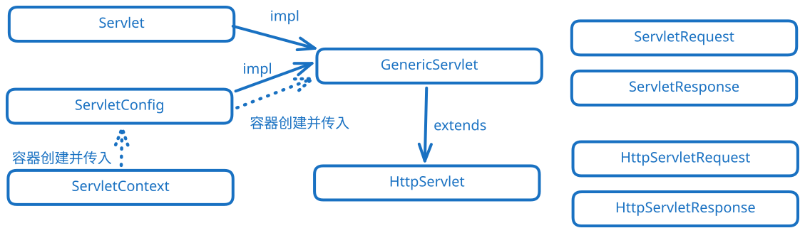

Servlet Advance

- servlet-lifecycle：servlet不推荐写构造，推荐放到init，因为有参构造器会让无餐构造器消失。tomcat 被 url 请求时，tomcat 会 new 出来 servlet 对象，然后调用 init。这里可以写数据库连接池等初始化的操作。接着每次调用都会调用 service 函数。最后销毁时调用 destroy。
- generic-servlet：GenericServlet是实现了Servlet与ServletConfig的抽象类。
- servlet-config：配置信息写到xml里面，程序可以通过GenericServlet或者ServletConfig对象获取配置信息。
- servlet-context：ServletContent用来保存应用级别的数据。
getInitParameterNames获取配置文件中单Servlet的<init-param>与全局的<context-param>setAttribute（或者get/remove）在程序中操控全局共享的缓存。getContextPath获取根目录，getRealPath获取到某一文件夹的绝对路径。
- http-servlet：HttpServlet是GenericServlet的利用模板方法设计模式的子类。子类只需要重写
doGet或者doPost这种方法就好了。其中405错误是get或者post等没实现，但是访问了导致的。
- department-management：项目实践（DAO负责操作数据库，servlet实现每一个api）
- forward-and-redirect:重定向（重新发一次请求，request内的配置不共享，application共享，不能访问WEB-INF），转发（服务器内不跳转，浏览器不用重新发请求，服务器的request域是一个，可以访问WEB-INF）
- default-servlet:默认Servlet（静态资源还有404都是这个做兜底的），自己写不要把
\作为路径，因为这是默认的静态资源路径
- listener：三个域各自有很多监听器
- filter：过滤器（从请求到访问的目标中间的过滤，比如日志，权限，编码等等）